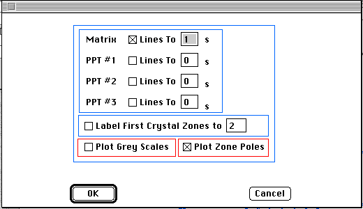

Distributed By: Virtual Labs
Kikuchi / Kossel Map Definition Dialog Box
PATH...File Menu:New:e-diffract::Kikuchi Maps
PATH...{Kikuchi Map}:Function Menu::Re-Define
PATH...File Menu:New:x-ray diffract::Kossel Lines
PATH...{Kossel Lines}:Function Menu::Re-Define

Kikuchi Map Definition Dialog Box
To Set the Initial Beam orientation, use the Beam
Orientation Dialog Box which can be found in the Set
All Parameters Dialog Box.
Kikuchi Map:Setup Dialog:Plot Grey Scales;.i.Kossel Map:Setup Dialog:Plot
Grey Scales;When this box is checked, the Kikuchi
lines will be plotted with a grey scale value relative to their calculated
intensity. This feature works best with a black background.
Author: James T.
Stanley
 Desktop
Manual:Dialog Boxes
Desktop
Manual:Dialog Boxes
Distributed By: Virtual Labs
Last Updated:1/12/96 Sat, Apr 27, 1996